전기산업기사 (2003-03-16 기출문제)
1과목: 전기자기학
1. 그림(a)의 인덕턴스에 전류가 그림(b)와 같이 흐를 때 2초에서 6초 사이의 인덕턴스 전압 VL은 몇 V 인가?
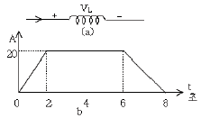
- 0
- 5
- 10
- 20
(정답률: 70%)

2. 그림과 같은 동심구에서 도체 A에 Q[C]을 줄 때 도체 A 의 전위는 몇 V 인가? (단, 도체 B의 전하는 0이다.)
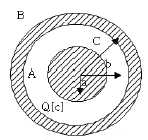
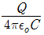
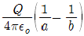
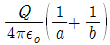
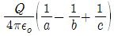
(정답률: 72%)
3. 그림과 같이 A, B사이에 일정전압을 공급하는 경우 PD에 흐르는 전류를 최소가 되게 하려면 CP와 PD의 저항비는?
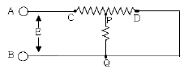
- 1 : 1
- 1 : 2
- 2 : 1
- 1 : 3
(정답률: 54%)
4. 질량이 10-3kg인 작은 물체가 전하 Q[C]을 가지고 무한도체 평면 아래 진공 중 2×10-2m에 있다. 전기 영상법을 이용하여 정전력이 중력과 같게 되는데 필요한 Q의 값은 약 몇 C 인가?
- 2.5 × 10-8
- 3.2 × 10-8
- 4.2 × 10-8
- 5.0 × 10-8
(정답률: 24%)
5. 전자석의 흡인력은 공극의 자속밀도를 B라 할 때 다음의 어느 것에 비례하는가?
- B1.6
- B2
- B3
- B
(정답률: 69%)
6. 자기회로의 자기저항이 일정할 때 코일의 권수를 1/2로 줄이면 자기인덕턴스는 원래의 몇 배가 되는가?
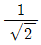
- 1/2
- 1/4
- 1/8
(정답률: 53%)
7. 강자성체의 자속밀도 B의 크기와 자화의 세기 J의 크기를 비교할 때 옳은 것은?
- J는 B보다 약간 크다.
- J는 B보다 약간 작다.
- J는 B보다 대단히 크다.
- J는 B보다 대단히 작다.
(정답률: 72%)
8. 도체 1, 2 및 3이 있을 때 도체 2가 도체 1에 완전 포위되어 있음을 나타내는 것은?
- P11 = P21
- P11 = P31
- P11 = P33
- P12 = P32
(정답률: 69%)
9. 전계 E[V/m]와 자계 H[AT/m]가 평면파를 이루고 C[m/s]의 속도로 자유공간에 전파된다면 진행방향에 수직되는 단위 면적을 단위 시간에 통과하는 에너지는 몇 W/m2 인가?
- 1/2 EH
- EH
- EH2
- E2H
(정답률: 72%)
10. 비유전률 εs = 80, 비투자율 μs = 1인 매질내의 고유 임피던스는 약 몇 Ω인가?
- 34.2
- 42.2
- 52.2
- 44.8
(정답률: 57%)
11. 정전용량이 4μF, 5μF, 6μF이고, 각각의 내압이 순서대로 500V, 450V, 350V인 콘덴서 3개를 직렬로 연결하고 전압을 서서히 증가시키면 콘덴서의 상태는 어떻게 되겠는가? (단, 유전체의 재질이나 두께는 같다.)
- 동시에 모두 파괴된다.
- 4μF가 가장 먼저 파괴된다.
- 5μF가 가장 먼저 파괴된다.
- 6μF가 가장 먼저 파괴된다.
(정답률: 77%)
12. 면적 S[m2], 간격 d[m]의 평행판 콘덴서에 Q[C]의 전하를 주면 정전력의 크기는 몇 N 인가?
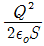
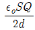
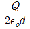
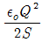
(정답률: 31%)
13. 유전체내의 전계 E와 분극의 세기 P의 관계식은?
- P = εo(εs - 1 ) E
- P = εs(εo - 1 ) E
- P = εo(εs + 1 ) E
- P = εs(εo + 1 ) E
(정답률: 74%)
14. 공기 중에 고립된 금속구가 반지름 r 일 때, 그 정전용량은 몇 F 인가?
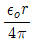
- εor
- 4πεor
- 8πεor
(정답률: 61%)
15. 무한장 직선 도체에 선밀도 λ [C/m]의 전하가 분포 되어 있는 경우, 이 직선 도체를 축으로 하는 반지름r[m]의 원통면상의 전계는 몇 V/m 인가?
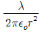
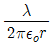
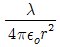
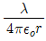
(정답률: 67%)
16. 전기 쌍극자 모멘트 M[c.m]인 전기 쌍극자에 의한 임의의 점의 전위는 몇 V인가? (단, 전기쌍극자간의 중심점에서 임의의 점까지의 거리는 R[m]이고, 이들간에 이루어진 각은 θ이다.)
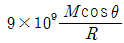
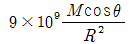
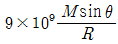
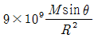
(정답률: 46%)
17. 1m의 간격을 가진 선간전압 66000[V] 인 2개의 평행 왕복도선에 10[kA]의 전류가 흐를 때 도선 1m 마다에 작용하는 힘의 크기는 몇 N/m 인가?
- 1
- 10
- 20
- 200
(정답률: 58%)
18. 두 자성체 경계면에서 정자계가 만족하는 것은?
- 양측 경계면상의 두 점간의 자위차가 같다.
- 자속은 투자율이 작은 자성체에 모은다.
- 자계의 법선성분이 같다.
- 자속밀도의 접선성분이 같다.
(정답률: 68%)
19. 전기분극이란?
- 도체내의 원자핵의 변위이다.
- 유전체내의 원자의 흐름이다.
- 유전체내의 속박전하의 변위이다.
- 도체내의 자유전하의 흐름이다.
(정답률: 37%)
20. 경동선의 고유저항은 몇 [Ωㆍmm2/m]인가?
- 1/35
- 1/38
- 1/55
- 1/58
(정답률: 50%)
2과목: 전력공학
21. ACSR은 동일한 길이에서 동일한 전기저항을 갖는 경동연선에 비하여 어떠한가?
- 바깥 지름과 중량이 모두 크다.
- 바깥 지름은 크고 중량은 작다.
- 바깥 지름은 작고 중량은 크다.
- 바깥 지름과 중량이 모두 작다.
(정답률: 57%)
22. 그림과 같은 200/5인 변류기의 1차측에 150A의 3상평형 전류가 흐를 때 전류계 A3에 흐르는 전류는 몇 A인가?
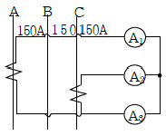
- 3.75
- 5.25
- 6.75
- 7.25
(정답률: 48%)
23. 뇌서지와 개폐서지의 파두장과 파미장에 대한 설명으로 옳은 것은?
- 파두장은 같고 파미장이 다르다.
- 파두장이 다르고 파미장은 같다.
- 파두장과 파미장이 모두 다르다.
- 파두장과 파미장이 모두 같다.
(정답률: 62%)
24. 송전선 보호에 있어서 주로 교류 표시선 방식인 표시선 계전방식(Pilot Wire Relaying)에 해당되는 것은?
- 전송차단방식(Transfer Trip Relaying)
- 주파수비교방식(Frequence Comparision Relaying)
- 위상비교방식(Phase Comparision Relaying)
- 전압반향방식(Oppsed Voltage Method)
(정답률: 36%)
25. 전력계통의전압을 조정하는 가장 보편적인 방법은?
- 발전기의 유효전력 조정
- 부하의 유효전력 조정
- 계통의 주파수 조정
- 계통의 무효전력 조정
(정답률: 51%)
26. 발열량 5500kcal/kg의 석탄 10ton을 연속하여 24000kWh의 전력을 발생하는 화력발전소의 열효율은 약 몇 %인가?
- 27.5
- 32.5
- 35.5
- 37.5
(정답률: 49%)
27. 3상용 차단기의 정격차단용량은?
- 정격전압 × 정격차단전류
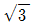
× 정격전압 × 정격차단전류- 3 ×정격전압 × 정격차단전류
- 3 × 정격전압 × 정격전류
(정답률: 72%)
28. 그림과 같은 3상 3선식 전선로의 단락점에 있어서의 3상 단락전류는 몇 A인가? (단, 22kV에 대한 %리액턴스는 4%, 저항분은 무시한다.)
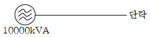
- 5560
- 6560
- 7560
- 9560
(정답률: 43%)
29. 특유 속도를 선정할 때 그 한계를 표시하는 식으로
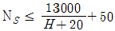
이 사용되는 수차는?- 펠턴수차
- 프란시스수차
- 프로펠러수차
- 카플란수차
(정답률: 39%)
30. 그림과 같이 D[m]의 간격으로 반지름 r[m]의 두 전선 a, b 가 평행하게 가선되어 있는 경우, 작용인덕턴스는 몇 mH/km 인가?
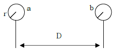
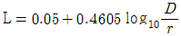
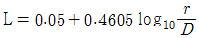
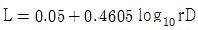
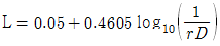
(정답률: 71%)
31. 지중 케이블에서 고장점을 찾는 방법이 아닌 것은?
- 머리루프(Murray Loop) 시험기에 의한 방법
- 메거(Megger)에 의한 측정방법
- 수색 코일(Search coil)에 의한 방법
- 펄스에 의한 측정법
(정답률: 64%)
32. 3상 1회선 송전선로의 소호리액터의 용량은?
- 선로 충전용량과 같다.
- 3선 일괄의 대지 충전용량과 같다.
- 선간 충전용량의 1/2 이다.
- 1선과 중성점 사이의 충전용량과 같다.
(정답률: 58%)
33. 송전선로의 중성점을 접지하는 목적은?
- 전선 동량의 절약
- 전압강하의 감소
- 유도장해의 감소
- 이상전압의 방지
(정답률: 73%)
34. 송전계통의 안정도를 증진시키는 방법이 아닌 것은?
- 전압 변동을 적게 한다.
- 직렬리액턴스를 크게한다.
- 제동저항기를 설치한다.
- 중간조상기방식을 채택한다.
(정답률: 71%)
35. 선간거리가 2D[m]이고 선로 도선의 지름이 d[m]인 선로의 단위 길이당 정전용량은 몇 μF/km인가?
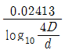
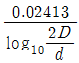
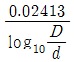
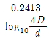
(정답률: 54%)
36. 동기조상기와 전력용 콘덴서를 비교할 때 전력용 콘덴서의 이점으로 옳은 것은?
- 진상과 지상의 양용이다.
- 단락고장이 일어나도 고장전류가 흐르지 않는다.
- 송전선의 시송전에 이용이 가능하다.
- 전압 조정이연속적이다.
(정답률: 44%)
37. 비접지 3상 3선식 배전선로에서 선택지락보호를 하려고 한다. 필요하지 않은 것은?
- DG
- CT
- ZCT
- GPT
(정답률: 41%)
38. 정격전압 1차 6600V, 2차 220V의 단상변압기 2대를 승압기로 V결선하여 6300V의 3상 정원에 접속하면 승압된 전압은 약 몇 V인가?
- 6410
- 6460
- 6510
- 6560
(정답률: 42%)
39. 장거리송전선에서 단위 길이당 임피던스 Z = r + jωL [Ω/km], 어드미턴스 Y = g + jωC [Ω/km]라 할 때 저항과 누설콘덕턴스를 무시하는 경우 특성임피던스의 값은?
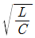
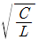
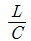
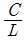
(정답률: 72%)
40. 설비 A의 설비용량이 150kW, 설비 B의 설비용량이 350kW일 때 수용률이 각각 0.6 및 0.7일 경우, 합성최대전력이 279kW이면 부등률은 약 얼마인가?
- 1.2
- 1.3
- 1.4
- 1.5
(정답률: 62%)
3과목: 전기기기
41. T-결선에 의하여 3300[V]의 3상으로부터 200[V], 40[kVA]의 전력을 얻는 경우 T좌 변압기의 권수비는?
- 약 16.5
- 약 14.3
- 약 11.7
- 약 10.2
(정답률: 47%)
42. 10[kW], 3상, 200[V]유도전동기의 전부하 전류 [A]는? (단, 효율 및 역률 85[%])
- 60
- 80
- 40
- 20
(정답률: 47%)
43. 60[Hz], 20[극], 3상 권선형 유도전동기의 2차 주파수가 3[Hz]일 때 2차 손실이 600[W]이다. 토크[kgㆍm]는? (단, 기계적 손실은 무시한다.)
- 약 35.5
- 약 32.5
- 약 31.5
- 약 30.5
(정답률: 47%)
44. 권선형 유도전동기의 슬립 S에 있어서의 2차 전류는? (단, E2, X2는 전동기 정지시의 2차 유기전압과 2차 리액턴스로 하고, R2는 2차 저항으로 한다.)
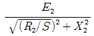
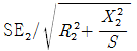
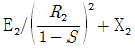
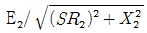
(정답률: 35%)
45. 그림과 같은 단산 전파 정류 회로를 사용하여 직류전압 100[V]를 얻으려고 한다. 회로에 사용한 D1, D2는 몇 [V]의 PIV인 다이오드를 사용해야 하는가? (단, 부하는 무유도 저항이고 정류회로 및 변압기내의 전압강하는 무시한다.)
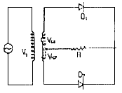
- 314[V]
- 222[V]
- 111[V]
- 100[V]
(정답률: 45%)
46. SCR의 설명중 옳지 않은 것은?
- 스위칭 소자이다.
- P-N-P-N 소자이다.
- 쌍방향성 사이리스터이다.
- 직류, 교류, 전력 제어용으로 사용한다.
(정답률: 58%)
47. 변압기 권선의 층간 절연시험은?
- 가압시험
- 유도시험
- 충격시험
- 단락시험
(정답률: 18%)
48. 용량 1[kVA], 3000/200[V]의 단상 변압기를 단권변압기로 결선해서 300/3200[V]의 승압기로 사용할 때 그 부하용량[kVA]는?
- 16
- 15
- 10
- 1
(정답률: 35%)
49. 60.[Hz], 슬립 3[%], 회전수 1164[rpm]인 유도전동기의 극수는?
- 4
- 6
- 8
- 10
(정답률: 65%)
50. 25[kW], 125[V], 1,200[rpm]의 직류 타여자 발전기가 있다. 전기자 저항(브러시 저항포함)은 0.4[Ω]이다. 이 발전기를 정격 상태에서 운전하고 있을 때 속도를 200[rpm]으로 저하 시켰다면 발전기의 유기기전력은 어떻게 변화하겠는가? (단, 정상 상태에서 유기기전력은 E 라 한다.)
- 1/2 E
- 1/4 E
- 1/6 E
- 1/8 E
(정답률: 50%)
51. 직권 전동기에서 위험 속도가 되는 경우는?
- 정격전압, 무부하
- 저전압, 과여자
- 전기자에서 저저항 접속
- 정격전압, 과부하
(정답률: 54%)
52. 동기 발전기에 회전 계자형을 사용하는 경우가 많다. 그 이유에 적합하지 않은 것은?
- 전기자가 고정자 이므로 고압 대전류용에 좋고 절연이 쉽다.
- 계자가 회전자 이지만 저압 소용량의 직류이므로 구조가 간단하다.
- 전기자보다 계자극을 회전자로 하는 것이 기계적으로 튼튼하다.
- 기전력의 파형을 개선한다.
(정답률: 38%)
53. 100[kW], 효율93[%]인 직류발전기를 3상 유도 전동기에 직결하여 운전할 때, 전동기 유입 전류를 구하시오. (단, 전동기의 단자전압은 3300[V], 효율95[%], 역률85[%]이다.)
- 약 23.3[A]
- 약 36.6[A]
- 약 42.9[A]
- 약 48.7[A]
(정답률: 29%)
54. 어떤 변압기의 백분율 저항 강하가 2[%], 백분율 리액턴스 강하가 3[%]라 한다. 이 변압기로 역률이 80[%]인 부하에 전력을 공급하고 있다. 이 변압기의 전압 변동률[%]는?
- 3.8
- 3.4
- 2.4
- 1.2
(정답률: 50%)
55. 직류전동기의 공급전압을 V[V], 자속을 ø[Wb], 전기자 전류를 I[A], 전기자 저항을 Ra[Ω], 속도를 N[rpm]라 할 때 속도식은? (단, K 는 상수이다.)
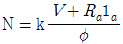
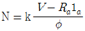
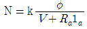
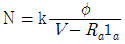
(정답률: 62%)
56. 정류방식 중에서 맥동율이 가장 작은 회로는?
- 단상반파 정류회로
- 단상 전파 정류회로
- 삼상 반파 정류회로
- 삼상 전파 정류회로
(정답률: 51%)
57. 3상 동기발전기에 3상 전류(평형)가 흐를 때 전기자 반작용은 이 전류가 기전력에 대하여 A 때 감자작용이 되고 B일 때 자화작용이 된다. A,B의 적당한 것은?
- A : 90° 뒤질 때, B : 90° 앞설 때
- A : 90° 앞설 때, B : 90° 뒤질 때
- A : 90° 뒤질 때, B : 동상일 때
- A : 동상일 때 , B : 90° 앞설 때
(정답률: 46%)
58. 3상 동기 발전기의 전기자 반작용은 부하의 성질에 따라 다르다. 잘못 설명한 것은?
- cos θ≒1 일 때 즉 전압, 전류가 동상일 때는 실제적으로 교차자화작용을 한다.
- cos θ≒0 일 때 즉 전압, 전류가 전압보다 90° 뒤질 때는 감자작용을 한다.
- cos θ≒0 일 때 즉 전류가 전압보다 90° 앞설 때 증자작용을 한다.
- cos θ≒ø 일 때 즉 전류가 전압보다 ø만큼 뒤질때 증자작용을 한다.
(정답률: 59%)
59. 전원전압 100[V]인 단상 전파제어 정류에서 점호각이 30° 일 때 직류 평균전압 [V]은?
- 84
- 87
- 92
- 98
(정답률: 27%)
60. 정격전압이 일정하고 일정한 파형에서 주파수가 상승하면 변압기 철손은 어떻게 변하는가?
- 불변이다.
- 감소한다.
- 증가한다.
- 어떤 기간동안 증가한다.
(정답률: 34%)
4과목: 회로이론
61. 저항과 콘덴서를 병렬로 접속한 회로에 직류100[V]를 가하면 5[A]가 흐르고, 교류 300[V]를 가하면 25[A]가 흐른다. 이 때 콘덴서의 리액턴스 [Ω]는?
- 7
- 10
- 14
- 15
(정답률: 39%)
62. 주기적인 구형파의 신호의 합성은 어떤 현상인가?
- 무수히 많은 주파수의 합성이다.
- 직류분만으로 합성된다.
- 교류합성을 갖지 않는다.
- 성분분석이 불가능하다.
(정답률: 71%)
63. 4단자 회로망의 4정수 A, B, C, D 중 출력단자 3~4가 개방되었을 때의 V1/V2인 A 값은?
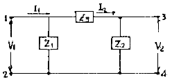
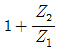
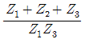
(정답률: 45%)
64. 저항과 리액턴스의 직렬회로에 E = 14 + j38[V]인 교류 전압을 가하니 j = 6+ j2[A]의 전류가 흐른다. 이 회로의 저항과 리액턴스는 얼마인가?
- R = 4[Ω], XL = 5[Ω]
- R = 5[Ω], XL = 4[Ω]
- R = 6[Ω], XL = 3[Ω]
- R = 7[Ω], XL = 2[Ω]
(정답률: 47%)
65. 정전용량 C만의 회로에 100[V], 60[Hz]의 교류를 가하니 60[mA]의 전류가 흐른다. C는 얼마인가?
- 5.26[μF]
- 4.32[μF]
- 3.59[μF]
- 1.59[μF]
(정답률: 61%)
66. 3상 불평형 전압에서 불평형률은?
(정답률: 70%)
67. 비정현파의 이그러짐의 정도를 표시하는 양으로써 왜형률이란?
- 평균치 / 실효치
- 실효치 / 최대치
- 고조파만의 실효치 / 기본파의 실효치
- 기본파의 실효치 / 고조파만의 실효치
(정답률: 67%)
68. 그림과 같은 회로의 전달함수는? (단, ei는 입력, eo는 출력신호이다.)
(정답률: 43%)
69. 구형파의 파고율은?
- 1.0
- 1.7321
- 1.414
- 2.0
(정답률: 53%)
70. 그림과 같은 궤환회로의 종합 전달함수는?
(정답률: 50%)
71. 3상 불평형 회로가 있다. 각상 전압이 Va=220[V], Vb=200∠-140°[V], Vc=220∠100°[V]일 때 정상분전압 V1[V]는?
- 약 197.31∠13.06°
- 약 197.31∠-13.36°
- 약 217.03∠13.06°
- 약 217.03∠-13.36°
(정답률: 23%)
72. R[Ω]인 3개의 저항을 같은 전원에 △결선으로 접속시킬 때 선전류의 크기비 는?
- 1/3
- 3
(정답률: 34%)
73. 이상적인 변압기로 구성된 4단자 회로에서 정수 D를 구하면?
- 1
- 0
- n
- 1/n
(정답률: 47%)
74. 일 때 f(t)의 초기값은 얼마인가?
- 1
- 2
- 3
- 5
(정답률: 39%)
75. 최대눈금이 50[V]인 직류전압계가 있다. 이 전압계를 써서 150[V]의 전압을 측정하려면 몇 [Ω]의 저항을 배율기로 사용하여야 되는가?(단, 전압계의 내부저항은 5000Ω이다.)
- 1000
- 2500
- 5000
- 10000
(정답률: 26%)
76. △ 결선된 부하를 Y 결선으로 바꾸면 소비전력을 어떻게 되겠는가? (단, 선간전압은 일정하다.)
- 1/3 배
- 1/9 배
- 3 배
- 9 배
(정답률: 63%)
77. 회로에서 스위치 S를 닫았을 때 시정수[S]의 값은? (단, L=10[mH], R=20[Ω]이다.)
- 2000
- 5 × 10-4
- 200
- 5 × 10-3
(정답률: 62%)
78. 인덕턴스 L=50[mH]의 코일에 Io=200[A]의 직류를 흘려 급히 그림과 같이 용량 C=20[μF]의 콘덴서에 연결할 때 회로에 생기는 최대전압[kV]는?
- 10
- 20
(정답률: 29%)
79. 어느 회로에 전압과 전류의 실효값이 각각 50[V], 10[A]이고, 역률이 0.8이다. 무효전력[Var]은?
- 400
- 300
- 200
- 100
(정답률: 51%)
80. 전장 중에 단위 정전하를 놓을 때 여기에 작용하는 힘과 같은 것은?
- 전하
- 전위
- 전속
- 전장의 세기
(정답률: 51%)
5과목: 전기설비기술기준 및 판단 기준
81. 옥내에 시설하는 사용전압이 400V 미만인 전구선으로 캡타이어 케이블을 사용할 경우, 단면적이 몇 mm2 이상인 것을 사용하여야 하는가?
- 0.75
- 2
- 3.5
- 5.5
(정답률: 53%)
82. 시가지의 고압 가공전선로에는 그 선로길이 몇 km이하마다 개폐기를 시설하여야 하는가?
- 2
- 3
- 4
- 5
(정답률: 37%)
83. 전동기 등에만 이르는 저압 옥내전로의 과전류차단기는 그 과전류차단기에 직접접속하는 부하측의 전선의 허용전류가 40A인 경우 정격전류가 몇 A 이하인 것을 사용하여야 하는가?
- 50
- 60
- 100
- 125
(정답률: 27%)
84. 600V 비닐절연전선을 사용한 저압 가공전선이 위쪽에서 상부 조영재와 접근하는 경우의 전선과 상부 조영재간의 이격거리는 최소 몇 m 인가?
- 1
- 1.5
- 2
- 2.5
(정답률: 42%)
85. 고압전로와 비접지식의 저압 전로를 결합하는 변압기로서 그 고압권선과 저압권선간에 금속제의 혼촉방지판이 붙어있고, 이 혼촉방지판에 제 2종 접지공사를 한 것에 접속하는 저압전선을 옥외에 시설할 때 사용할 수 있는 것은?
- 600V 비닐 절연전선
- 옥외용 비닐 절연전선
- 케이블
- 다심형전선
(정답률: 48%)
86. 일정용량 이상의 조상기에는 그 내부에 고장이 생긴 경우에 자동적으로 이를 전로로부터 차단하는 장치를 하여야 하는데 그 용량은 몇 kVA 이상인가?
- 15000
- 20000
- 35000
- 40000
(정답률: 58%)
87. 전력보안통신설비로 무선용안테나 등의 시설에 관한 설명으로 옳은 것은?
- 항상 가공전선로의 지지물에 시설한다.
- 접지와 공용으로 사용할 수 있도록 시설한다.
- 전선로의 주위상태를 감시할 목적으로 시설한다.
- 피뢰침설비가 불가능한 개소에 시설한다.
(정답률: 55%)
88. 가공직류 전차선 또는 이와 전기적으로 접속하는 조가용선이 가공약전류전선 등과 접근되어 시설되는 경우, 가공약전류전선 등과 수평거리는 전차선로의 사용전압이 고압인 경우에는 최소 몇 m 이상으로 하면 되는가?
- 1
- 1.2
- 1.5
- 1.8
(정답률: 27%)
89. 가공전선로에 사용하는 지지물의 강도계산에 적용하는 갑종풍압하중은 지지물이 목주, 원형철주, 원형철 근콘크리트주인 경우 수직투영면적 1m2에 대하여 몇 kgf의 풍압을 기초로 하여 계산하는가?
- 60
- 68
- 76
- 90
(정답률: 24%)
90. “관등회로”라고 하는 것은?
- 분기점으로부터 안정기까지의 전로를 말한다.
- 스위치로부터 방전등까지의 전로를 말한다.
- 스위치로부터 안정기까지의 전로를 말한다.
- 방전등용 안정기로부터 방전관까지의 전로를 말한다.
(정답률: 67%)
91. 최대사용전압이 6600V인 3상 유도전동기의 권선과 대지사이의 절연내력시험전압은 몇 V 인가?
- 7260
- 7920
- 8250
- 9900
(정답률: 59%)
92. 저압 연접인입선은 인입선에서 분기하는 점으로부터 몇 m를 넘는 지역에 미치지 아니하여야 하는가?
- 60
- 80
- 100
- 120
(정답률: 39%)
93. 전로에 시설하는 400V 이상의 저압용 기계기구의 철대 및 금속제 외함에는 제 몇 종 접지공사를 하여야 하는가?
- 제 1종 접지공사
- 제 2종 접지공사
- 제 3종 접지공사
- 특별 제 3종 접지공사
(정답률: 41%)
94. 고압 가공전선에 케이블을 사용하는 경우의 조가용선 및 케이블의 피복에 사용하는 금속체에는 몇 종 접지공사를 하여야 하는가?
- 제 1종 접지공사
- 제 2종 접지공사
- 제 3종 접지공사
- 특별제 3종 접지공사
(정답률: 46%)
95. 지중전선로에 사용하는 지중함의 시설기준으로 옳지 않은 것은?
- 견고하고 차량 기타 중량물의 압력에 견딜 수 있을 것.
- 그 안에 고인물을 제거할 수 있는 구조일 것.
- 뚜껑은 시설자 이외의 자가 쉽게 열 수 없도록 할 것.
- 조명 및 세척이 가능한 장치를 하도록 할 것.
(정답률: 62%)
96. 금속덕트공사에 의한 저압 옥내배선의 시설방법으로 적합하지 않은 것은?
- 금속덕트에 넣은 전선의 단면적의 합계가 덕트내부 단면적의 20%가 되게 하였다.
- 전선은 옥외용 비닐절연전선을 제외한 절연전선을 사용하였다.
- 덕트를 조영재에 붙이는 경우, 덕트의 지지점간의 거리를 7m로 견고하게 붙였다.
- 저압 옥내배선의 사용전압이 380[V]이어서 덕트에 제 3종 접지공사를 하였다.
(정답률: 54%)
97. 저압 옥내간선에서 분기하여 전기사용 기계기구에 이르는 저압 옥내전로는 저압 옥내간선과의 분기점에서 전선의 길이가 몇 m 이하인 곳에 개폐기 및 과전류 차단기를 시설하여야 하는가?
- 1.5
- 2
- 2.5
- 3
(정답률: 25%)
98. 건조한 곳에 시설하고 또한 내부를 건조한 상태로 사용하는 쇼윈도안의 사용전압이 400V 미만인 저압 옥내배선의 전선은?
- 단면적이 0.75mm2 이상인 절연전선 또는 캡타이어 케이블
- 단면적이 1.25mm2 이상인 코드 또는 절연전선
- 단면적이 0.75mm2 이상인 코드 또는 캡타이어 케이블
- 단면적이 1.25mm2 이상인 코드 또는 다심형 전선
(정답률: 45%)
99. 특별고압 가공전선로의 지지물 양측의 경간의 차가 큰 곳에 사용되는 철탑은?
- 내장형 철탑
- 인류형 철탑
- 각도형 철탑
- 보강형 철탑
(정답률: 53%)
100. 소맥분, 전분, 유황등의 가연성 분진이 존재하는 공장에 전기설비가 발화원이 되어 폭발할 우려가 있는 곳의 저압 옥내배선에 적합하지 못한 공사는?
- 합성수지관공사
- 금속관공사
- 가요전선관공사
- 케이블공사
(정답률: 41%)
평균 전류 Iavg = (4A + 8A)/2 = 6A
인덕턴스 전압 VL = L(di/dt) = 2H((6A-2A)/4s) = 4V
따라서 정답은 "4" 이다.
보기에서 "0" 이 정답인 이유는 없다.